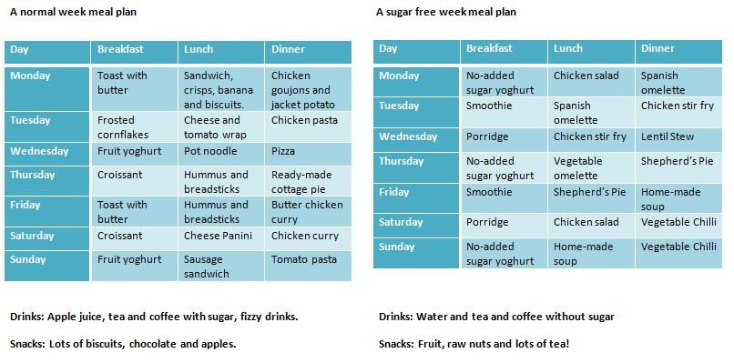

So what made you embark on a sugar free adventure?
Elena: I randomly found an event on Facebook which was a sugar free month. I sent it as a joke to my friends because every time we meet we bake with a lot of sugar! So it started as a joke until Petra suggested we should do it for real.
I’d expect there to be cravings and moments of sugary desperation. Was that the case?
Petra: Of course, sometimes there were moments. When I would crave a waffle or something sweet I would spend ages wondering what I could eat instead. But it’s best just to leave the kitchen and go for a walk. It will pass!
Being honest now…were there any slip-ups?
(pause)
Petra: Okay, there was one day that I did It was a wedding, near the end of the month. I remember getting excited, thinking this is going to be amazing, the best moment of my life…but it wasn’t. It was nice, I liked it, but not amazing. Once you’re used to living without sugar then it becomes easier.
How difficult was it to manage what you ate outside of the home?
Petra: I didn’t feel comfortable going out as you can’t eat or drink much. It’s also really not socially accepted! People aren’t used to being around people who are sugar free and a night out would end up with prolonged conversations. We would have to explain the whole body process and the chemistry behind it!
How did your bodies react to the change in diet?
b>Elena: The first week I was surprisingly active. I also lost around five kilos that month which was definitely a motivating factor for me. I think I was actually eating more than normal and I didn’t go to the gym!
Are you still sugar free?
Elena: Yeah, we are! Although only because we’ve started again for Lent! I think in the long run we really want to strike a balance.
Do you have any final tips for me or anybody wanting to cut sugar?
Petra: It’s all or nothing at the beginning, no exceptions. A supportive environment is also really useful so try to get someone to do it with you. Oh – and lock away all your sugar!